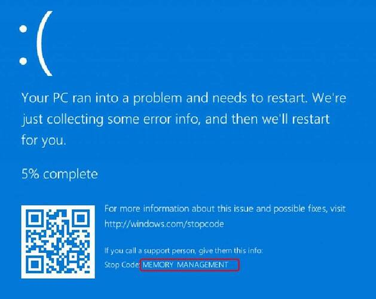

| 班級 | 姓名 | 學號 | 日期 |
|---|---|---|---|
| 四機械四乙 | 吳宇昕 | B10831020 | 12/20/2022 |
說明C++/C#語言異同點
stack heap 空間大小 小 大 是否連續 是 否 讀寫速率 快 慢 自動管理空間 是 否 在C++，存在heap記憶體的物件，使用完了需要手動用
delete關鍵字清除，像是這樣或是用smart pointer讓compiler知道何時使用完畢，在哪裡可以自動call destructor。像是這樣:
如果在C++沒有用這兩種方法清除heap記憶體空間，會發生memory leak。電腦的記憶體一直被佔據，所有可用空間都被占滿後很可能會當機顯示windows blue screen of death 
然而，C#有garbage collector的設計。有許多runtime support機制可以隨時檢查哪個物件或記憶體區段已經失去所有reference，自動銷毀沒有reference的物件。
若有需要，C#也可以用
fixed搭配unsafe關鍵字在一個scope以內宣告某個物件是神聖不可侵犯的，避免garbage collector銷毀失去reference但其實還需要用到的物件。
C#程式需要大量的runtime support，連結外部的
dll才可以正常運作。然而C++幾乎把所有運作必要的內容在compile time都囊括進exe檔了。因此，C++比C#更適合用於單晶片控制器、嵌入式系統等效能有限，無法支援太多runtime support機制的電腦。
C++是單純的compiled language，而C#同時是compiled language也是interpreted language。
C++的compiler會直接把sorce code轉成CPU可以讀取的machine code。C#的compiler會把sorce code先轉成intermediate representation(IR)，到了runtime才把IR用interpreter執行，或是用just-in-time compiler再次編譯成machine code。
因此，C#比C++更適合做跨平台開發。分送C#的IR給目標電腦，無論該電腦作業系統為何，只要有需要的runtime support就可以把IR轉換成最適合該電腦的machine code執行。C++卻需要在compile time決定輸出的machine code要給哪種作業系統使用。只能為每個作業系統compile出專屬該作業系統的machine code，或是直接分送sorce code到目標電腦去compile成它的machine code，變成open sorce程式。
| C++ | C# | |
|---|---|---|
| memory management | 高自定性但手動 | 受限制而自動管理 |
| runtime support | 幾乎不需要 | 大量需要 |
| cross platform | 困難 | 容易 |
C#的value tuple有點像是Python的tuple，可以用簡單的
()符號打包多個變數，讓函式一次回傳多個數值。一個C#的tuple例子是這樣:而Python的例子是這樣:
但是不一樣的地方在於，Python的Tuple可以被index索引，也可以被迴圈走訪；C#的tuple沒有這兩個功能。
看錯誤訊息內容，似乎是可以為
(int, int, int)定義一個GetEnumeratormethod，讓這個foreach loop可以用? 可能需要另外寫public System.Enumerator overwrite GetEnumerator::(int, int, int)之類的method。C#的tuple也有點像是C++的struct，但是幫你省去了需要定義struct的困擾。C++的tuple宣告起來有點麻煩，程式碼不如C#簡潔。總之，讓函式回傳多個數值應該是C# Tuple的主要用途。可能我寫C#的時候，會選擇像C++一樣設計帶有output variable參數的函式，達到函式回傳多值的效果。
sorce code and replit
終端機輸出
計算最長距離
題目給7個點的x,y座標，求最遠兩點的距離。求解過程如下：
心得
計算歐式距離需要開根號，耗費較多計算資源，應盡可能降低開根號次數。若要計算每一個點與其他6個點之間的距離，須至少開C(7,2)次根號。但是可以確定最大距離一定發生在四個邊界點之間，只需要計算四個邊界點兩兩之間的距離，開C(4,2)次根號就夠了。若題目加入更多點的座標，不會增加開根號次數。
尋找四個邊界點所需的時間會隨題目的點數增加線性上升，比起指數型上升是相當大的改善。
或許這個題目還有更好的解法，進一步減少計算成本，目前這是我想到最好的做法。
sorce code and replit
終端機輸出

心得
C#有個很好用的關鍵字readonly，讓一個class attribute的值經初始化後便改為唯讀，不可變更。這比C++的const關鍵字好用，因為一個const member沒辦法初始化賦值。
C#好像不讓我們把的class member設為const，若要一個class member值固定不變，必須用readonly。因此這題我把學生的成績設為readonly int[,]，放在class Program裡面。
sorce code main.cs Deck.cs Card.cs Player.cs and replit
三份cs檔分別包含class Program、class Deck、class card及class Player，皆屬於namespace Q5
終端機輸出

class Card
{
private readonly static string[] sSuit = {"Spade", "Club", "Diamond", "Heart"};
private readonly static string[] sNumber = {"A", "2", "3", "4", "5", "6", "7", "8", "9", "10", "J", "Q", "K"};
private int suitIdx;
private int numberIdx;
public string Suit => sSuit[this.suitIdx]; // custom get accessor for suit of a card
public string Number => sNumber[this.numberIdx]; // custom get accessor for Number of a card
/// <summary>
/// Create an instance of a card.
/// </summary>
/// <param name="_suitIdx">The index to retrieve the suit of this card as a string from array Card.sSuit</param>
/// <param name="_numberIdx">The index to retreve the number of this card as a string Card from array Card.sNumber.</param>
public Card(int _suitIdx, int _numberIdx)
{
this.suitIdx = _suitIdx;
this.numberIdx = _numberIdx;
}
public override string ToString()
{
return string.Format("{0,2}--{1,-9}", this.Number, this.Suit);
}
}
每張牌都有一個花色與一個數值，兩者都應該是string。然而，過去似乎聽說string是指向heap的char pointer，在程式裡生成過多string容易使記憶體零散。因此，每張牌的花色與數值欄位我並沒有用string的方式儲存，而是以int儲存，作為索引另外兩個static string array sSuit與sNumber的索引值。如此一來，每個card instance只佔據記憶體連續的16個byte。 也就是說，每個instance的this.Suit跟this.Number並不佔據記憶體空間，它們只是個method，被呼叫的時候去索引Card.sSuit跟Card.sNumber陣列，回傳一個字串。
有了這兩個accessor，即使每個card instance並沒有真正的this.Number跟this.Suit兩個attribute，也可以對一個card instance打點簡單取出它的數值跟花色。
Card c = new Card(2, 10);
Console.WriteLine($"{c.Number}--{c.Suit}"); // call the accessors of Number and Suit
// Diamond--J
不知道這樣做是否真的可以提升程式效能，減少記憶體零散，或是只是我自找麻煩？
含有一個長度52的Card陣列this.AllCards，代表整副牌的所有卡片。
Deal方法
發牌的方法this.Deal pass by reference輸入一個玩家陣列，發兩張牌給每位玩家。每個Deck instance都會用一個int this.lastGivenCardIdx記錄自己this.AllCards陣列發到第幾張牌了，避免一張牌在不同次發牌間重複出現。發牌時，一律從洗好的牌組抽出最上面的一張牌發給玩家，從this.AllCards陣列第0張牌發到最後一張。
public void Deal(ref Player[] _players, int nCardsEachPerson = 2)
{
Card[] cardsGivenToAPlayer = new Card[nCardsEachPerson];
if (!this.shuffledFlag){
// each deck of card must be shuffled before deal
throw new CardsNotShuffledException();
}
for (int i = 0; i < _players.GetLength(0); i++) {
for (int j = 0; j < nCardsEachPerson; j++){
cardsGivenToAPlayer[j] = AllCards[lastGivenCardIdx];
lastGivenCardIdx++;
}
_players[i].ReceiveCards(cardsGivenToAPlayer);
}
}
這個發牌的方法在牌發完的時候會產生index out of range exception，玩家人數或每個人拿到的牌數量太多時會出問題。
另外，自定義了CardsNotShuffledException。若程式還沒有call this.Shuffle()方法洗牌，就call this.Deal發牌，會丟出一個自定義的exception。

每個Player instance只有一個attribute，是List<Card>，代表該玩家的手牌。除此之外，Player class也定義了一些method，例如ReceiveCard、ShowCard等等，代表玩家可能做的事。還有一個static method AllPlayersShowCards，輸入一個玩家陣列，顯示所有玩家的手牌。
心得
C#確實比C++好寫很多。有了accessor的設計跟簡易的getter, setter，讀寫class內容的程式碼變得很簡單。
唯一比較想抱怨的，是C#不太讓我們把物件存在stack上，而且所有物件都需要一個個初始化。像是我的Player陣列：
Player players = new Player[3];
這樣寫只有初始化陣列本身，而沒有初始化到陣列裡的player instance。要走訪這個陣列，初始化一個個player instance，甚至不能用foreach loop。這樣寫行不通
foreach(Player p in players){
p = new Player();
// p is a foreach loop variable, cannot be reassigned
// or initialized
}
必須用傳統的for loop，寫成這樣:
for(int i = 0; i < players.Count(); i++){
players[i] = new Player();
}
創建instance的程式碼比C++ stack-allocate物件複雜，但這恐怕是在C#或Java都無法避免的。
使用Q5的程式碼測試vscode intellisense跟debugging功能。使用dotnet sdk 7.0，建置vscode開發環境。
C#每個物件都需要用new關鍵字初始化。下圖是我創建了一個Player陣列，稱為player，卻沒有使用new初始化陣列本身。當我試圖把這個陣列拿來用，傳進別的method時，vscode intellicense在compile time就劃紅線顯示錯誤訊息，告訴我這個陣列尚未初始化。
雖然不太清楚為甚麼錯誤訊息是說Use of unassigned local variable而不是uninitialized local variable。

第10行加上new關鍵字後，紅線就消失，可以編譯了。
Player[] players = new Player[3];
剛才的player陣列本身加上new關鍵字以後成功初始化了，但是裡面的元素，一個個Player instance沒有初始化，造成NullReference Exception

查看vscode debug工具列裡面的local variable watch視窗，可以看到陣列本身存在，但是裡面的三個元素還是null

在別處用for loop走訪這個陣列，初始化每個元素後就解決了這個run time error。
for(int i = 0; i < 3; i++){
players[i] = new Player();
}
書裡有提到C# xml-style comment的功能，試著幫Q5的程式碼加上一些註解。

同一個C# project使用到這個method的地方，只要把游標移到函式名稱上方，就會依summery, output, parameter自動顯示xml comment的內容。

但是有點疑惑的是，它只有顯示出<summery></summery>的內容，其他像<para name></para name>裡的，都沒有顯示出來。不知道我是哪裡做錯了，還是有什麼vscode套件的問題。
過去只知道break point可以讓程式執行到那裏就停下來，不知道還有conditional breakpoint這種東西。過去曾經遇到一個問題，走訪陣列的迴圈走到1000次的第894次時，總是發生runtime error。有conditional breakpoint，就可以在第893次的時候停下來，開始用step into功能單步執行，這樣更方便。
vscode的intellisense非常人性化，可以自己用xml語法控制註解內容真是一大福音。加上精心設計task.json跟launch.json的內容，f5一按下去就自動編譯並開始偵錯程式，一切流程自動化太方便了。
更棒的是，vscode免費。